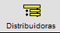
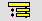
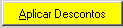
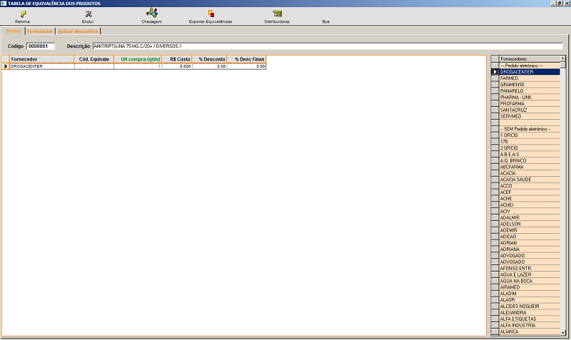
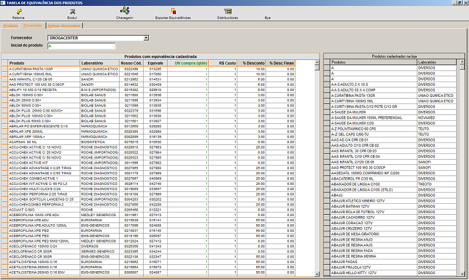
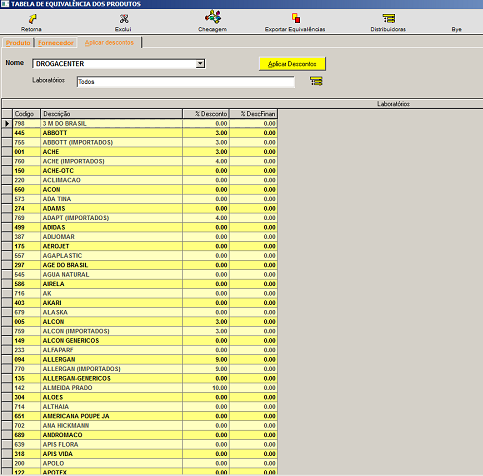

É uma forma de comparar e classificar algo. Aperte no topico que deseja para conhecer a funcionalidade de cada opção.
+Qual o procedimento para cadastrar equivalência?
No sistema:
- Primeiramente, é necessário entrar em contato com o fornecedor, para solicitar o arquivo com os produtos e seus descontos. Envie essa lista ao suporte do sistema, para que possa ser disponibilizada a atualização das equivalências no sistema.
- Executado esse procedimento, clique em

para atualizar os dados da distribuidora e equivalências.
- Atualizados os dados, informe os produtos.
+Aba produto:
- Selecione o produto e vincule, clicando duas vezes no fornecedor.
- Informe o código do produto no fornecedor, unidades para comprar, o custo, as porcentagens de desconto ou descontos financeiros.
+Aba fornecedor:
- Selecione o fornecedor, e informe a inicial do produto.
- Preencha os campos pertinentes e tecle ENTER até a próxima linha para salvar.
+Aba aplicar descontos:
- Selecione o fornecedor, realize um filtro dos laboratórios que o fornecedor trabalha clicando em

- Informe o percentual de desconto ou desconto financeiro concedido pelo laboratório.
- Informados todos os dados, clique em

OBS.: As informações sobre cada campo estão no final da página.
+Como alterar os dados da equivalência?
Selecione o produto, fornecedor ou laboratório, faça as alterações e clique em aplicar descontos para salvar.
+É possível excluir uma equivalência?
Selecione o produto cadastrado nas equivalências por fornecedor, clique em excluir (F4).
+Tela de Cadastro de equivalência por produto:

- Pressione F6 e pesquise o produto que será vinculado aos fornecedores.
- Selecionado o produto, clique duas vezes sobre o fornecedor a vincular.
- Informe o código do produto no fornecedor, quantas unidades para compra, custo, % de desconto ou desconto financeiro.
+Tela de Cadastro de equivalência por fornecedor:

- Selecione o fornecedor.
- Informe a inicial do produto a ser vinculado a esse fornecedor.
- Obs.: Nessa tela os produtos já estão com o código de equivalência de acordo com o arquivo enviado pelo fornecedor.
- Para que o sistema vincule o % desconto ou desconto financeiro, informe os mesmos na aba aplicar descontos.
+Tela para aplicar descontos por laboratório:

- Selecione o fornecedor.
- Realize um filtro dos laboratórios que o fornecedor trabalha.
- Selecionados os laboratórios, informe os descontos.
- Informados todos os dados, clique em